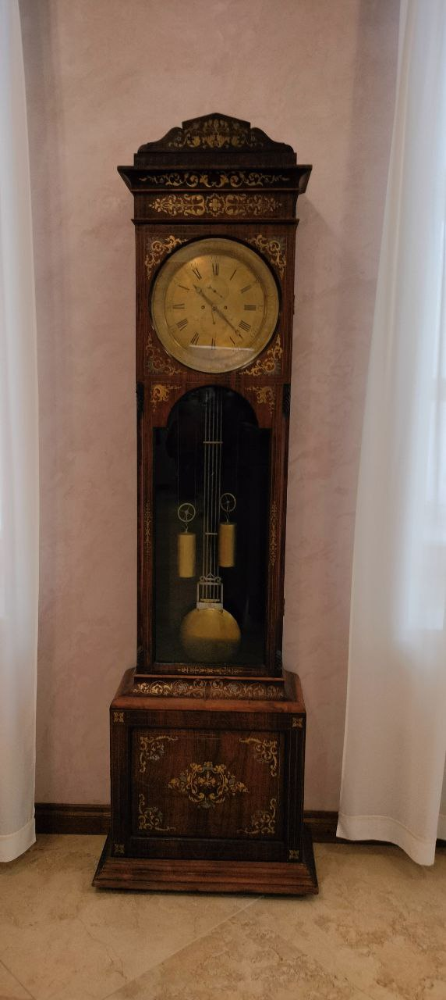
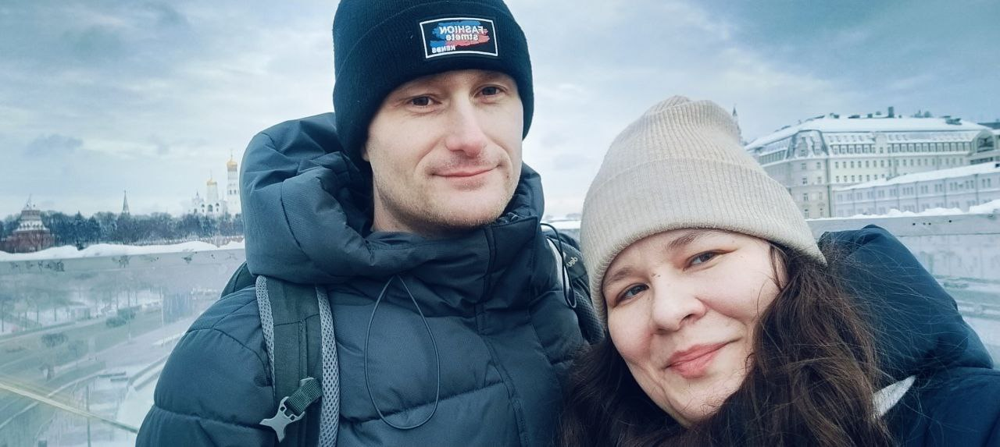
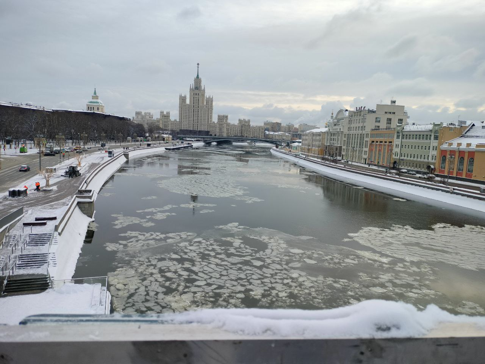
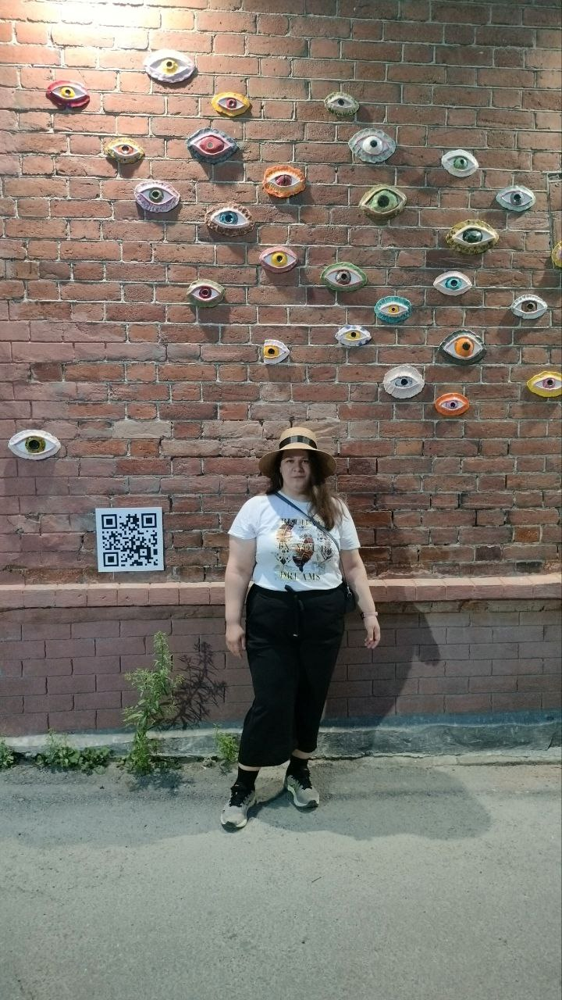

Это было самое начало пути. На этом этапе важно было проникнуться
основами и настроиться на учёбу. И, возможно, подумать, как новые
знания могут повлиять на ваше будущее.
Где-то в конце мая, компания в которой я работала расторгла со мной
договор. Эта ситуация была для меня полной неожиданностью. У меня не
было никакого плана что делать и куда идти. Выложила резюме на hh. И
на одном из собеседований прозвучало, что мне лучше во фронд-энде себя
попробовать. И я подумала: "А почему бы и нет?"
1 спринт: Я — чистый лист
На первых этапах мы работали со страхами и сомнениями, которые часто
испытывают новички. Один из них — страх перед чистым листом. Это,
конечно же, намного сложнее, чем боязнь куска бумаги. Часто за этим
ощущением скрываются более глубокие вопросы: с чего начать? а вдруг
будет слишком сложно? что, если я не справлюсь?
Боязнь первого листа у меня была проработана ещё в художественной
школе. Просто намечаем расположение элементов картины. Когда работала,
всегда рядом были волшебные фразы: "Select * From Dual" или "Begin
end;"... Вот что было страшно: Как всё успеть!?! Я продолжала
паролельно искать работу, да и обязанности жены и мамы остались на
мне. Ещё перемены случились не только у меня, но как-то разом у всёй
семьи. Чувствовала Мир вокруг себя как эту горную реку.
1 спринт: А если не получится?

Первый проект — позади! Но это всё ещё самое начало пути. Радость
могла быстро померкнуть и смениться ожиданием провала. Или вы,
наоборот, могли вдохновиться успехами и поверить в себя.
Уже с первого спринта я начала опаздывать. Не думала, что будет так
трудно выделять время на учёбу. И не думала, что будет так много всего
учить. Надеялась на свой опыт программирования, думала, что мне будет
просто разобраться. Оказалось, что это не так...
2 спринт: Погоня за идеалом
На этом этапе вы уже достаточно разбирались в основах вёрстки, для
того чтобы понять, как много ещё впереди. Вы могли попытаться
погнаться за идеалом и понять, что он недостижим. А, может, вы вовсе и
не подвержены перфекционизму и вместо того, чтобы сделать идеально,
старались просто сделать.
Выходное пособие заканчиволось. Мне предложили работу. На втором
спринте осваивалась на работе. Рискнула пойти работать на незнакомый и
достаточно редкий язак программирования. Училась на работе, училась в
практикуме... Стала опаздывать настолько, что приняла решение сменить
кагорту. Но стало спокойнее, т.к. трудоустройство (а главное -
зарплата) даёт некоторую стабильнось.
2 спринт: О тех, кто рядом

Всё это время вы были не одиноки (хотя, возможно, иногда и
чувствовали, что одни против целого мира). Вас окружали одногруппники,
команда сопровождения и просто близкие люди, которым можно
пожаловаться, если очередной макет просто так не поддавался. Осваивать
что-то новое легче, когда рядом есть единомышленники, не правда ли?
Команда практикума очень хорошо работает. Обе куратора Оля и Диана
меня поддерживали и продливали дедлайны. На новой работе понадобился
Git. Раньше с ним не работала. Наставники помогали с ним разобраться.
Очень спасает поддержка мужа. Мы вместе на фото.
3 спринт: Обходные стратегии

На этом курсе вы постоянно решали разные задачи. В какой-то момент вам
могло показаться, что решения просто иссякли. Значит, пришло время
посмотреть на задачу под другим углом.
Новая кагорта. Я расслабилась. Больше внимания уделяла обучению на
работе. Всё было интересно.
3 спринт: Когда опускаются руки
Во время учёбы часто возникает чувство, когда не знаешь, за что
хвататься. Вроде и проектную пора сдавать, и задачи хочется порешать,
и в теории получше разобраться, и жизнь не забыть пожить. В такие
моменты очень нужна концентрация. Вспомните, откуда вы её черпали.
Где-то тут у меня закончился испытательный срок на работе. Ещё раз
вздохнула с облегчением. Третий спринт я всё равно просрочила.
«Сейчас я здесь»

Сейчас вы уже очень много знаете о вёрстке. Но это только начало.
Во-первых, впереди ещё много материала про «красотищу». Во-вторых, с
окончанием курса учёба не заканчивается. ёрстка — это целый мир. И
этот мир постоянно меняется. Познать его полностью не получится, но
это тот случай, когда важен сам процесс познания. Ведь часто путь — и
есть результат.
Сейчас я стараюсь упеть всё, что только могу успеть. Катастрофически
опаздываю, но ещё надеюсь.